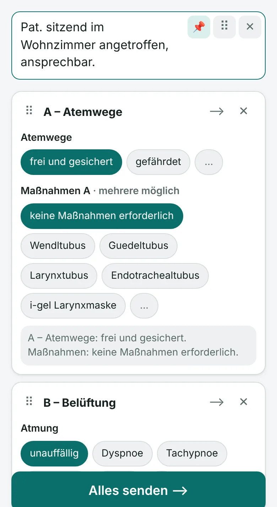
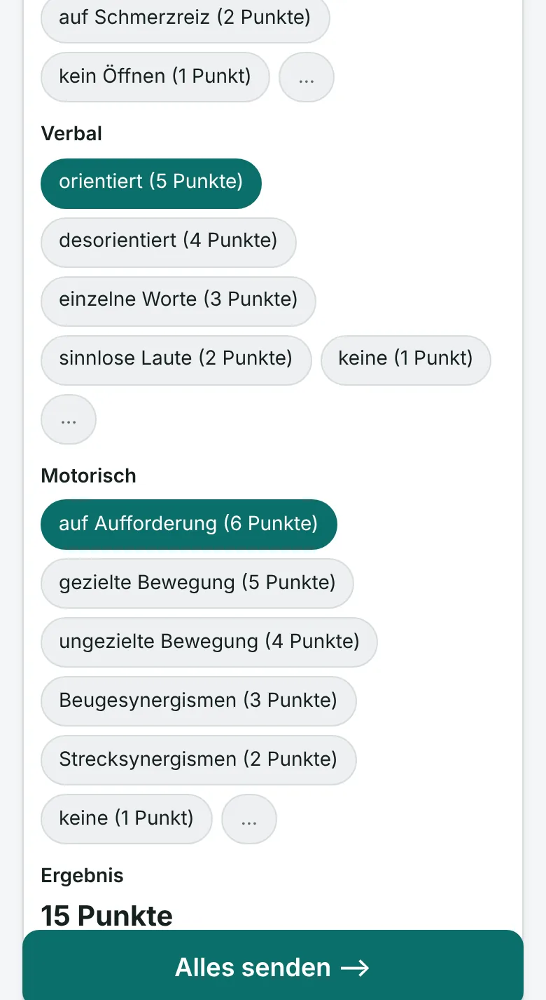
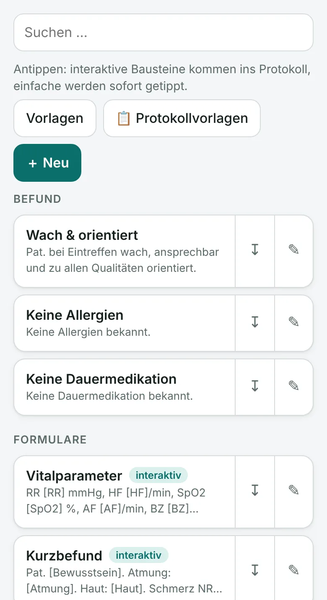

Dein Pilot fürs Protokoll.
Stell dein Protokoll am Handy oder iPad zusammen: antippen, diktieren, fertig. Ein kleiner USB-Stick tippt es dann ins Dokumentationsprogramm, als wäre er eine Tastatur.
- Keine Installation am Zielgerät
- Kein Internet nötig
- Protokolle bleiben am Handy

So funktioniert's
Das Handy schickt den Text per Bluetooth an den Stick. Der Stick steckt im Tablet oder PC und tippt ihn dort Zeichen für Zeichen ein.
- Handy oder iPad
- Bluetooth
- ProtoPilot-Stick
- USB
- Tablet oder PC
-
Stick einstecken
Den Stick in einen USB-Anschluss am Zielgerät stecken. Er meldet sich dort wie eine ganz normale Tastatur, installiert wird nichts.
-
Protokoll zusammenstellen
In der Web-App Bausteine antippen, Auswahlfelder füllen und dazwischen Freitext tippen oder diktieren.
-
Alles senden
Am Zielgerät ins gewünschte Textfeld klicken und in der App auf „Alles senden“ tippen. Der Stick schreibt das Protokoll, samt Umlauten.
Weniger tippen, sauber dokumentieren
ProtoPilot nimmt dir das Schreiben ab. Was im Protokoll steht, entscheidest du.
Interaktive Bausteine
Textbausteine mit Auswahlfeldern, etwa nach dem ABCDE-Schema. Antippen statt tippen, dazwischen jederzeit Freitext.
Protokollvorlagen
Deine wichtigsten Bausteine mit einem Tipp im Protokoll, z. B. als Vorlage „Standard“, „Trauma“ oder „Kind“.
Scores mitgerechnet
Bei der GCS zählt ProtoPilot die Punkte der gewählten Antworten selbst zusammen. Eigene Scores lassen sich genauso anlegen.
Pflichtfelder & Rückfrage
Fehlende Angaben sind markiert, bevor gesendet wird. Vor dem Senden erinnert ProtoPilot: Nur Erhobenes dokumentieren.
Diktat & Rechtschreibung
Diktieren statt tippen. Die Rechtschreibprüfung läuft offline am Gerät und kennt medizinische Fachbegriffe.
Medikamente & Krankheiten
In Feldern wie Dauermedikation oder Vorerkrankungen suchst du direkt in einer gemeinsam gepflegten Liste, auch offline.
Im Team teilen
Gemeinsame Bausteine und Vorlagen für deine Wache. Mit Konto auf all deinen Geräten synchron.
Funktioniert ohne Netz
Die Verbindung zum Stick läuft über Bluetooth und braucht kein Internet, auch nicht im Funkloch.
So sieht's aus
Die Web-App läuft im Browser und lässt sich wie eine App auf den Startbildschirm legen.
ProtokollBausteine mit Auswahlfeldern, Freitext oben angeheftet 
GCSDie Punkte werden automatisch zusammengezählt 
BausteineEigene, vom Team und aus den Vorlagen
Sicher und datensparsam
Protokolle enthalten sensible Daten. Deshalb verlassen sie dein Handy nur auf einem Weg: über den Stick ins Zielgerät.
Protokolle bleiben am Handy
Das Protokoll wird nie hochgeladen. Es liegt nur im Browser deines Handys und wird beim Schließen verworfen.
Nur gekoppelte Geräte
Der Stick nimmt nur Handys an, die mit ihm gekoppelt sind. Die Bluetooth-Verbindung ist verschlüsselt.
Nichts zu installieren
Für das Zielgerät ist der Stick eine normale USB-Tastatur. Es läuft dort keine zusätzliche Software.
Diktat mit Bedacht
Das Diktat nutzt die Spracherkennung deines Handys. Je nach Gerät verarbeiten Google oder Apple die Sprache. Namen trägst du am besten direkt am Zielgerät ein.
Du dokumentierst, ProtoPilot schreibt.
ProtoPilot ist eine Schreibhilfe und trifft keine medizinischen Entscheidungen. Vorauswahlen und Vorlagen sind nur Vorschläge: Prüfe vor dem Senden, dass ausschließlich tatsächlich erhobene Befunde und durchgeführte Maßnahmen im Protokoll stehen.
So bekommst du ProtoPilot
ProtoPilot ist gerade in der Testphase. Den Stick gibt es nur in kleiner Stückzahl und nur persönlich, zum Selbstkostenpreis von derzeit rund 60 €, einmalig und ohne Abo. Wenn du es ausprobieren möchtest, schreib eine kurze E-Mail. Du bekommst dann alle Infos zum Stick und zum Zugang.
info@protopilot.at
Das brauchst du
- einen ProtoPilot-Stick
- ein Android-Handy oder -Tablet mit Chrome, oder ein iPhone bzw. iPad mit der kostenlosen App Bluefy
- ein Zielgerät mit USB-Anschluss und deutschem Tastaturlayout
In der Testphase heißt die Web-App noch „DokuStick“.
Häufige Fragen
Muss ich am Zielgerät etwas installieren?
Nein. Der Stick meldet sich wie eine USB-Tastatur und nutzt den Tastaturtreiber, den jedes Betriebssystem schon mitbringt.
Funktioniert das mit unserem Dokumentationsprogramm?
ProtoPilot tippt überall dort, wo du auch mit einer Tastatur schreiben kannst. Bausteine können Sondertasten enthalten, etwa Tabulator oder Enter, um ins nächste Feld zu springen, oder das aktuelle Datum und die Uhrzeit. Am Zielgerät muss das Tastaturlayout Deutsch (Österreich oder Deutschland) eingestellt sein.
Welche Handys und Tablets werden unterstützt?
Auf Android-Geräten Chrome. Auf iPhone und iPad kann Safari kein Bluetooth für Webseiten, dort verwendest du die kostenlose App Bluefy aus dem App Store. In beiden Fällen kannst du die Web-App auf den Startbildschirm legen.
Brauche ich Internet?
Für die Verbindung zum Stick nicht. Internet brauchst du nur, um die App das erste Mal zu laden, um Bausteine mit deinem Konto zu synchronisieren und je nach Gerät für das Diktat.
Werden Patientendaten gespeichert?
Nein. Das Protokoll liegt nur im Browser deines Handys, wird nie hochgeladen und beim Schließen verworfen. Mit einem Konto werden nur deine Bausteine, Vorlagen und Einstellungen gespeichert.
Kann jemand anderer über meinen Stick tippen?
Nein. Nach dem Einstecken ist der Stick kurz koppelbereit, danach nimmt er nur noch Geräte an, die mit ihm gekoppelt sind. Bis zu vier Geräte werden gespeichert, alle Kopplungen lassen sich in der App löschen.
Kann ich eigene Bausteine anlegen?
Ja. Bausteine mit Auswahl-, Text- und Zahlenfeldern legst du direkt in der App an. Fertige Vorlagen, etwa ABCDE, Vitalparameter oder GCS, kannst du übernehmen und anpassen, im Team auch gemeinsam.
Was kostet ProtoPilot?
Derzeit rund 60 € für den Stick. ProtoPilot ist ein privates Projekt ohne Gewinnabsicht, verrechnet werden nur die Selbstkosten, inklusive eines Anteils an den laufenden Serverkosten. Du zahlst einmal, ein Abo gibt es nicht.